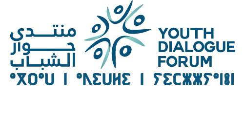
فضاء رقمي يوازي حضور المنتدى
معايير الموقع المؤسسي، وعرض الموقع الحالي لمنتدى حوار الشباب.
حضور المنتدى على الأرض
أنشطة ولقاءات وبيانات ومقالات في مدن ليبية مختلفة، وثّقها المنتدى في منشوراته.
من محتوى المنتدى المنشور منذ 2021.
هل يعكس الموقع الإلكتروني الحالي هذا الحضور؟
الجمهور الأساسي للموقع:
خريطة العرض
يتكوّن العرض من أربعة أجزاء: المعايير، ثم عرض الموقع الحالي وفقها، ثم الجانب التقني، ثم التوصيات.
- 1
معايير الموقع المؤسسي
خمس ركائز لموقع مؤسسة ذات حضور ميداني.
- 2
عرض الموقع الحالي
صفحة بصفحة: المشكلة، والحل المقترح.
- 3
الجانب التقني
البنية التقنية للموقع وإدارة المحتوى.
- 4
التوصيات
الاستضافة، وما بعد الإطلاق، وخطة الإطلاق.
الفصل الأول
معايير الموقع الإلكتروني لمؤسسة ذات حضور ميداني
الموقع هو المقر الرقمي للمنتدى
الدبلوماسي
يطّلع على المنتدى قبل تحديد موعد اللقاء.
المموّل والشريك
يبحث عن أدلة على العمل قبل الشراكة.
الصحفي
يبحث عن المواقف الرسمية مؤرّخة وموثّقة.
الشاب
يتعرّف على المنتدى وطرق الانضمام إليه.
غالباً ما يكون الموقع أول تعرّف على المنتدى، قبل أي لقاء مباشر.
قاعدة التوازي
يجب أن يكون الحضور الرقمي موازياً للحضور على الأرض. الفجوة بينهما تُضعف صورة المؤسسة لدى الزائر، مهما كان حجم العمل الفعلي.
دور الموقع توثيق الحضور القائم وإبرازه.
خمس ركائز لتقييم موقع المؤسسة
لكل ركيزة سؤال اختبار، نعود إليه في الفصل الثاني عند عرض الموقع الحالي.
هوية واحدة ورسالة واضحة
هوية بصرية واحدة في كل الصفحات: الألوان والخطوط وأسلوب الصور، ورسالة تُختصر في جملة واحدة. التشتت البصري ينعكس على صورة المؤسسة.
قصة متصلة تقود الزائر
الموقع مسار متصل، لا مجموعة صفحات منفصلة: التعريف، ثم الأنشطة، ثم المواقف، ثم المشاركة. كل صفحة تقود إلى التي تليها.
محتوى حيّ يثبت العمل
الأنشطة والصور والمشاريع أوضح دليل على الحضور، ويجب أن تكون حديثة وظاهرة في الواجهة ومرتبة بالتاريخ والمكان.
السرعة والوصول على الهاتف
يصل أغلب جمهور المنتدى إلى الموقع من الهاتف، وغالباً عبر شبكات ضعيفة. الموقع البطيء أو غير الملائم للشاشات الصغيرة يفقد جزءاً كبيراً من زواره.
طريق واضح للمشاركة
تنتهي كل صفحة بخطوة واضحة: الانضمام، أو الكتابة، أو التواصل، ويعمل المسار حتى نهايته.
الخطوة التالية: عرض الموقع الحالي وفق الركائز الخمس
الفصل الثاني: عرض الموقع الحالي، صفحة بصفحة.
الفصل الثاني
عرض الموقع الحالي، صفحة بصفحة
ما يعمل في الموقع الحالي
قبل الملاحظات: نقاط قوة حقيقية، يُبنى عليها ولا يُستغنى عنها.
- 1
أرشيف حقيقي وغني
أنشطة منذ 2021، وأخبار وبيانات رسمية، ومقالات بأقلام شباب المنتدى، منشورة بتواريخها.
- 2
توثيق مصوّر للعمل
صور ميدانية كثيرة للجلسات والتدريبات واللقاءات في المدن الليبية.
- 3
خريطة المنتديات
فكرة موفّقة تُظهر انتشار المنتدى في المدن الليبية بنظرة واحدة.
- 4
قنوات للمشاركة والتواصل
استمارة لإرسال المقالات، وصفحة للتواصل، وروابط لمنصات المنتدى.
الانطباع العام: موقع جامد بقالب جاهز
يبدو الموقع تقريراً يعرض المشاريع، لا فضاءً رقمياً حياً يعزز حضور المنتدى. الشرائح التالية تفصّل هذا الانطباع.
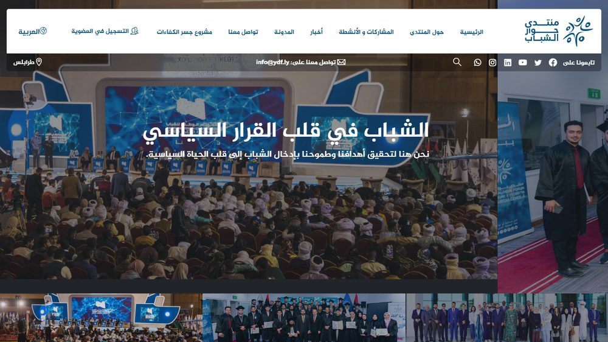
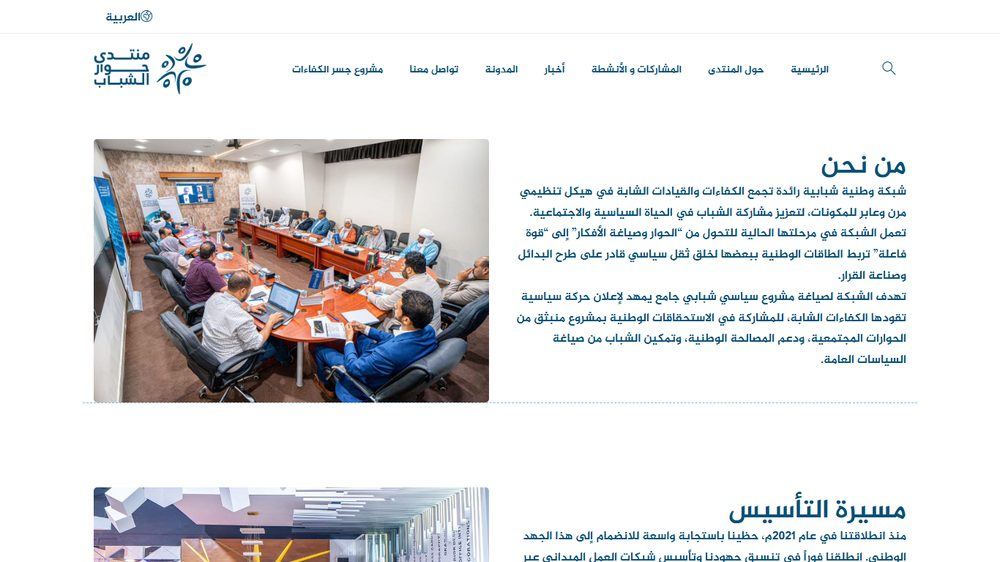
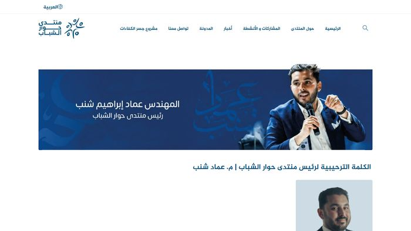
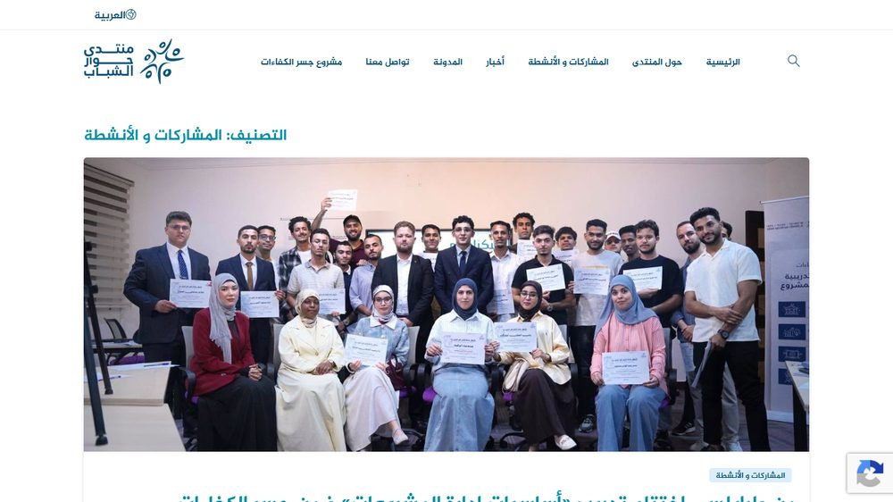
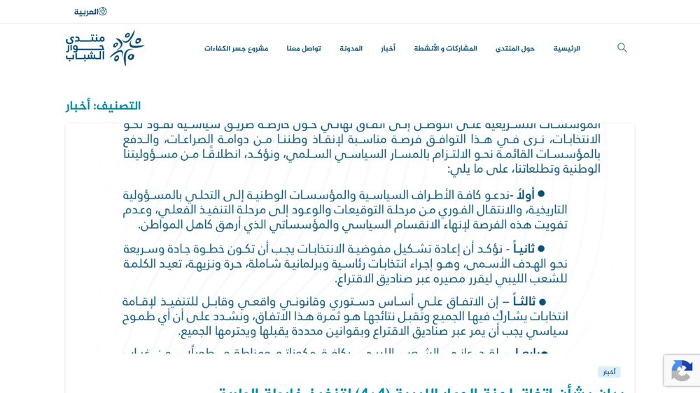
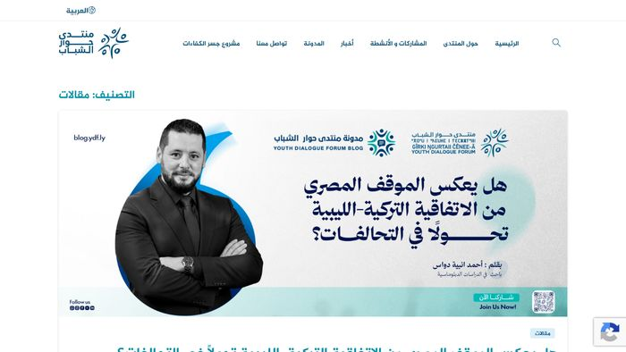
الصفحة الرئيسية: الشاشة الأولى
- 1
ازدحام الواجهة الأولى
شريط علوي مزدوج، وصور، ونصوص، تظهر كلها دفعة واحدة قبل أن يبدأ الزائر القراءة.
الحل المقترحعنصر رئيسي واحد ورسالة واحدة في الشاشة الأولى.
الركيزة 1 - 2
نصوص فوق الصور
العنوان الرئيسي ورسائل الصفحة مكتوبة فوق صور معتمة، فتضعف قراءتها.
الحل المقترحنص على أرضية هادئة، وصورة كاملة بجانبه.
الركيزة 1 - 3
تهميش الصور
صور العمل الميداني خلفية معتمة للنص، والصور أسفلها وعلى طرفها صغيرة ومقطوعة لا تأخذ حقها.
الحل المقترحصور واضحة وكاملة، دليلاً على العمل لا خلفيةً للنص.
الركيزة 3
الصفحة الرئيسية: تسلسل الأقسام
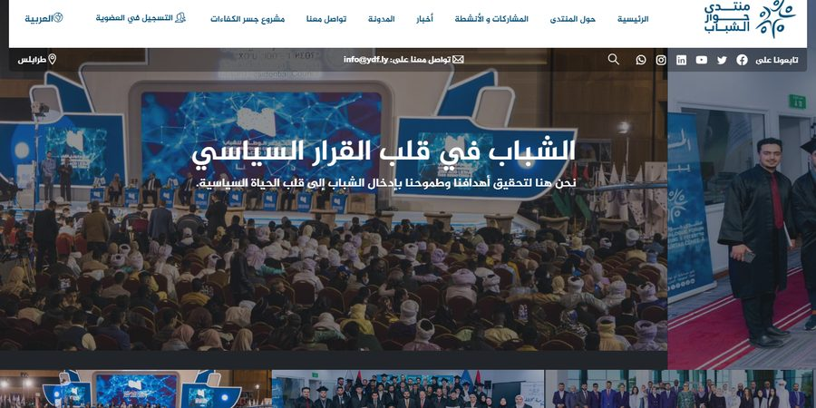
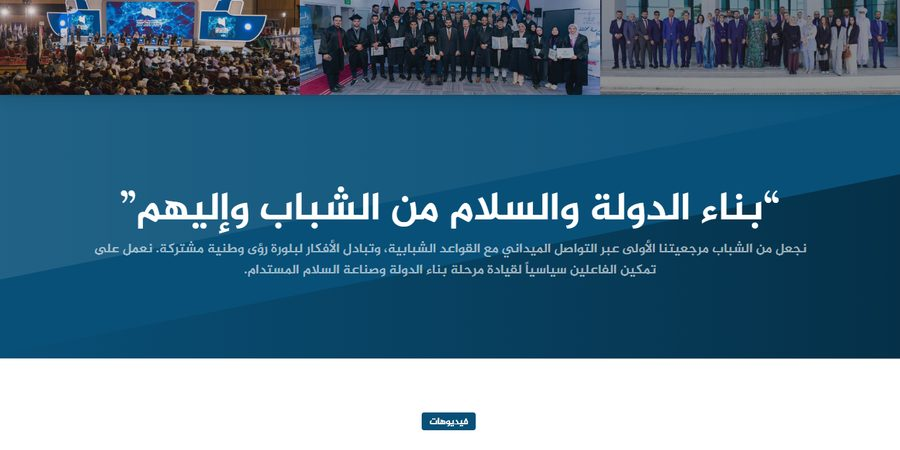
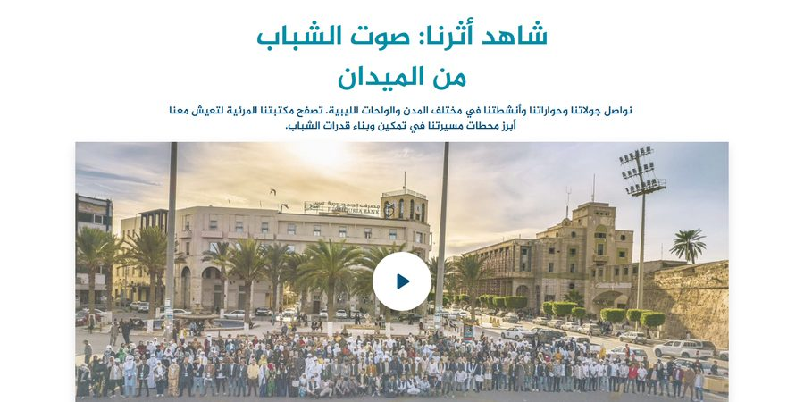
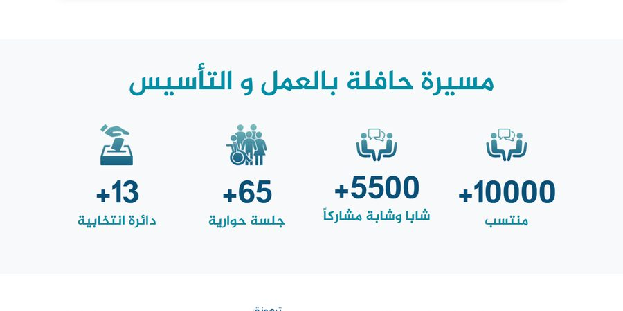
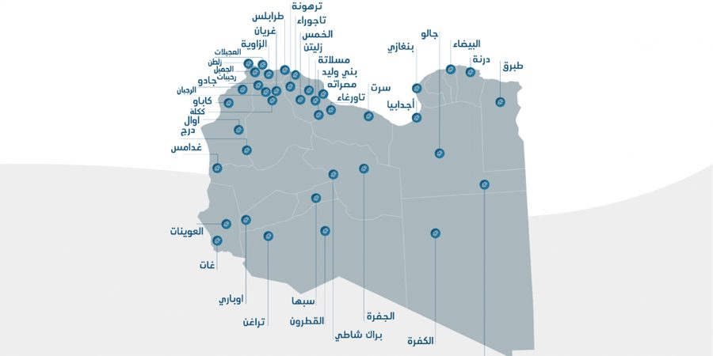
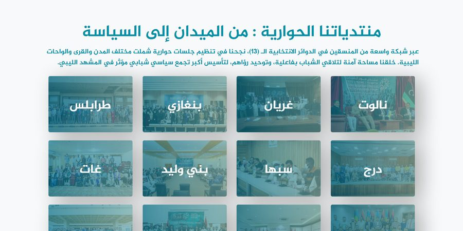
- 4
هيكل سردي ضعيف
تتتابع أقسام الرئيسية دون رابط بينها، فلا يعرف الزائر لماذا ينتقل من قسم إلى الذي يليه.
الحل المقترحقصة واحدة: من نحن، ثم ماذا نفعل، ثم ماذا نقول، ثم كيف يشارك الزائر، مع جملة تربط كل قسم بالذي يليه.
الركيزة 2
الرئيسية و«مسيرة المنتدى»: القسم نفسه مرتين
في الصفحة الرئيسية
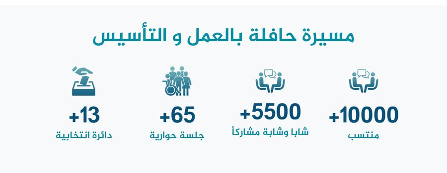
في صفحة «مسيرة المنتدى»
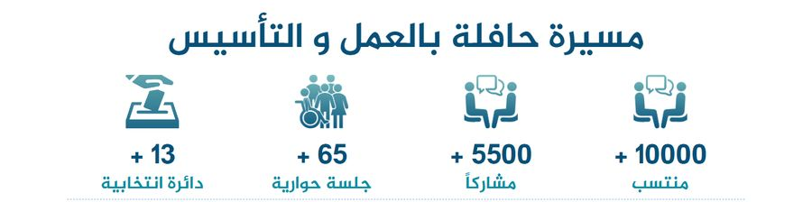
- 5
تكرار المحتوى
قسم «مسيرة حافلة بالعمل والتأسيس» بأرقامه نفسها يظهر في الرئيسية وفي صفحة «مسيرة المنتدى»، فلا يبقى سبب لزيارة الصفحة الداخلية.
الحل المقترحالرئيسية تعرض الملخص وتحيل إلى الصفحة الداخلية، والصفحة الداخلية تضيف ما لا يوجد في الرئيسية.
الركيزة 2
«حول المنتدى»: تعريف موزع على صفحتين
صفحة «مسيرة المنتدى»
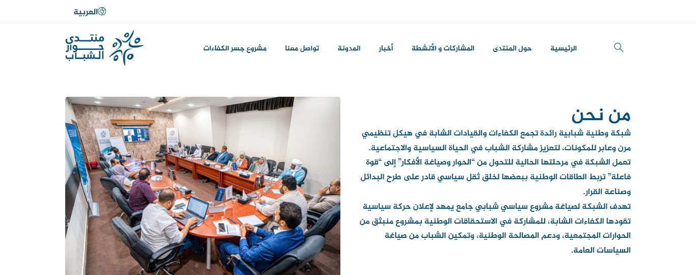
صفحة «كلمة رئيس المنتدى»
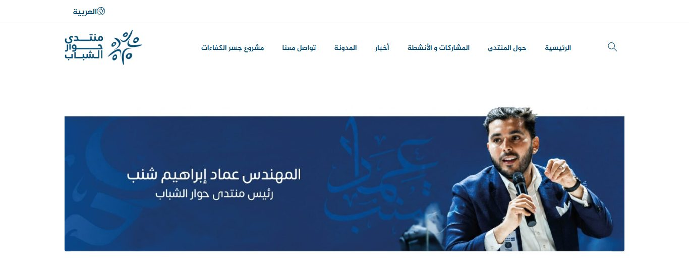
- 6
تشتت «حول المنتدى»
التعريف بالمنتدى موزع على صفحتين منفصلتين، وفيهما عناصر مكررة من الرئيسية.
الحل المقترحصفحة تعريف واحدة متصلة: الرسالة، والمسيرة، وكلمة الرئيس.
الركيزة 2
نهاية الصفحة: لا خطوة تالية
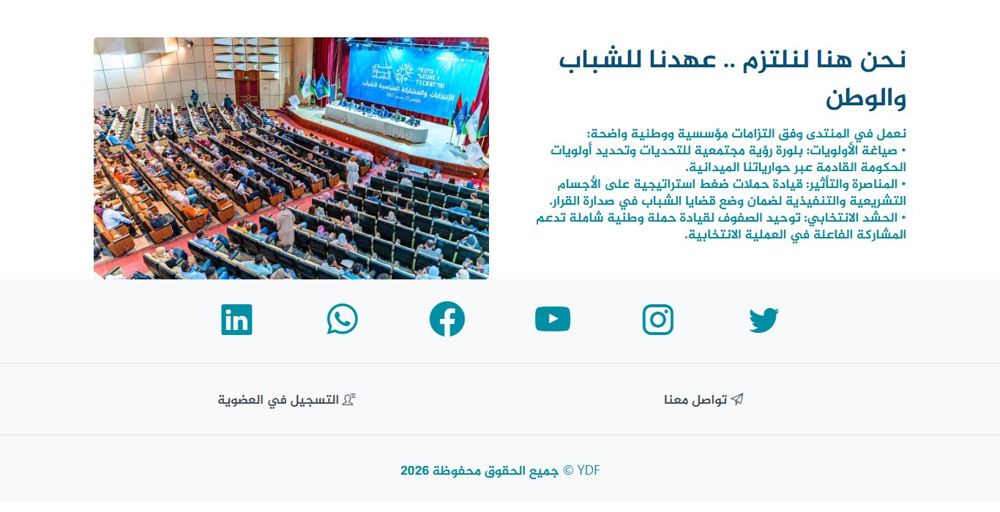
- 7
صعوبة التنقل
تنتهي الصفحة بأيقونات التواصل الاجتماعي، دون إشارة إلى الصفحة التالية. ليختار الزائر وجهته، يعود إلى أعلى الصفحة.
الحل المقترحنهاية كل صفحة تقود إلى الصفحة التالية في القصة، مع قائمة ثابتة يسهل الوصول إليها في أي لحظة.
الركيزة 2
المشاركات والأنشطة
- 8
الأنشطة متكدسة بلا تنظيم
عنوان الصفحة «التصنيف: المشاركات و الأنشطة» تسمية جاهزة من نظام النشر. وكل نشاط بطاقة تبدأ بصورة تملأ الشاشة، والبطاقات متطابقة متتالية، لا فرز فيها ولا إبراز لأحدثها أو أهمها.
الحل المقترحإبراز أحدث الأنشطة، وتصنيفها بالمشروع والمدينة ونوع النشاط.
الركيزة 3
صفحات المدن: صور بلا زمن
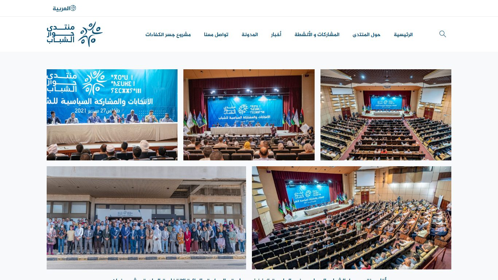
- 9
لا ترتيب زمني
صور المنتديات والمدن معروضة بلا تاريخ ولا عنوان في أعلى الصفحة، ولا أرشيف مرتب بالسنوات يبيّن تسلسل العمل.
الحل المقترحتاريخ ومكان على كل نشاط وكل مجموعة صور، وأرشيف مرتب زمنياً.
الركيزة 3
الأنشطة والأخبار والمدونة: القالب نفسه
- 10
تكرار القالب بدل بناء الهوية
الصفحات الثلاث بطريقة التوزيع نفسها: تسمية «التصنيف»، ثم صورة كبيرة، ثم عنوان. تكرار العناصر نفسها لا يصنع هوية.
الحل المقترحهوية واحدة (الألوان والخطوط وأسلوب الرسم) تُوظَّف بأشكال عرض مختلفة تناسب كل نوع من المحتوى.
الركيزة 1
صور مقصوصة
خبر «انطلاق مشروع شبكة المدربين المؤثرين»
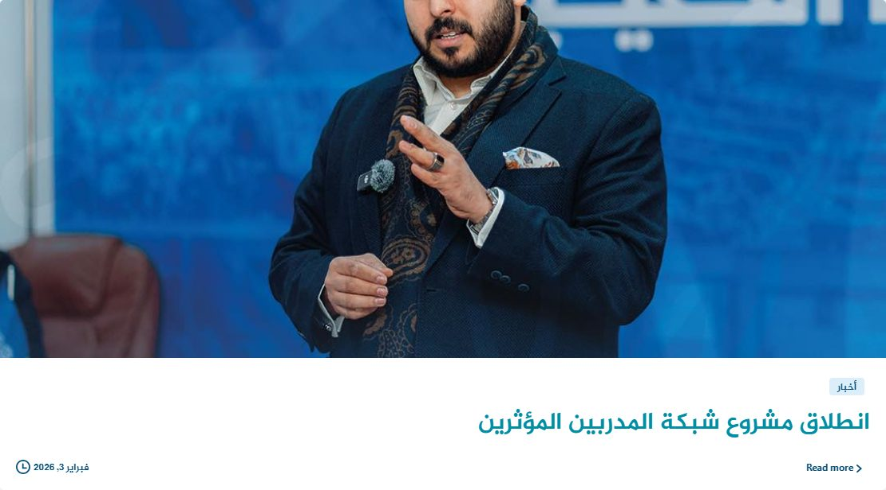
بيان في قائمة الأخبار
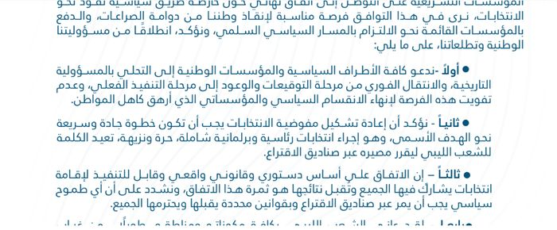
خبر في قائمة الأخبار
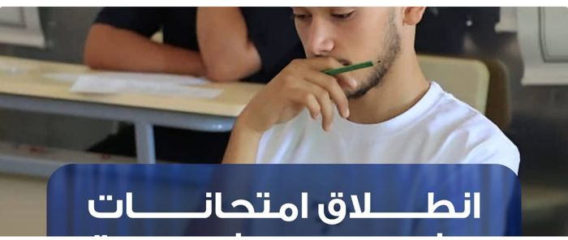
- 11
صور تظهر ناقصة
في قائمة الأخبار، صورة رئيس المنتدى مقصوصة فلا يظهر منها إلا أسفل الوجه، وصور البيانات والأخبار مقصوصة من أعلاها أو أسفلها.
الحل المقترحعرض الصور كاملة بمقاساتها الصحيحة، وضبط موضع القص على الوجوه والعناوين.
الركيزة 1
الفصل الثالث
الجانب التقني: كيف يعمل الموقع، وكيف يُدار محتواه
مشروعان مترابطان: واجهة ولوحة إدارة
- الواجهة على ydf.ly: ملفات ثابتة سريعة، فيها التصميم والصفحات.
- لوحة الإدارة على cms.ydf.ly: نظام Strapi، ومعه قاعدة البيانات والصور المرفوعة.
- متصفح الزائر يطلب طلبين: الصفحة من ydf.ly، ثم المحتوى من cms.ydf.ly.
- الربط في سطر واحد: عنوان لوحة الإدارة مكتوب في ملف إعدادات واحد في الواجهة.
إضافة خبر: من لوحة الإدارة، دون أي كود
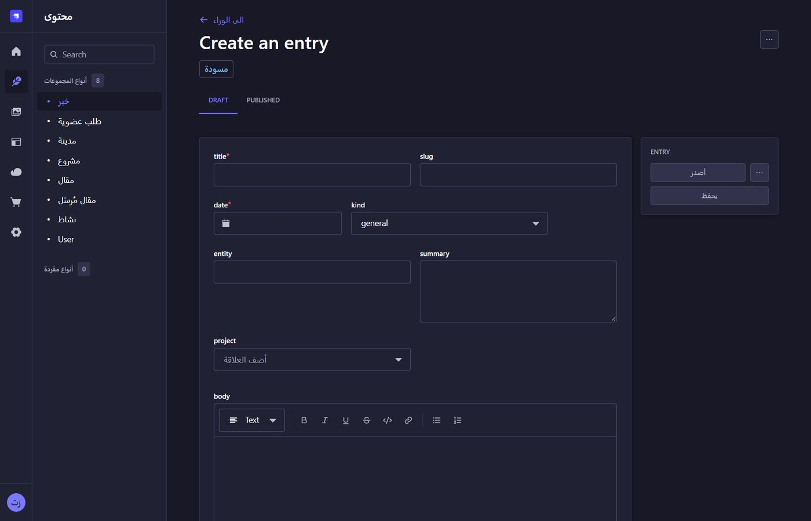
- 1
اختيار نوع المحتوى
«خبر»، ثم «إنشاء إدخال جديد». وبالطريقة نفسها: نشاط، أو مقال، أو مدينة، أو مشروع.
- 2
تعبئة الحقول
العنوان والتاريخ والنوع والملخص والنص والصور. النوع يحدد القسم الذي يظهر فيه الخبر، والتاريخ يحدد ترتيبه.
- 3
النشر
«أصدر»: يظهر الخبر في الموقع في مكانه الصحيح وبالتصميم نفسه، في «آخر الأخبار» و«كل الأخبار» معاً.
الفصل الرابع
التوصيات: الاستضافة، وما بعد الإطلاق، وخطة الإطلاق
الاستضافة: خياران
خادم افتراضي واحد للمشروعين
- كلفة شهرية أقل، وتحكم كامل.
- الواجهة ولوحة الإدارة وقاعدة البيانات في مكان واحد.
- يحتاج مسؤولاً تقنياً: التحديثات، والنسخ الاحتياطي، والمراقبة.
استضافة ملفات للواجهة، وStrapi Cloud للوحة الإدارة
- لا خادم يُدار: التحديثات والنسخ الاحتياطي على مزوّد الخدمة.
- أبسط للفريق غير التقني.
- كلفة شهرية أعلى، وتحكم أقل.
التوصية: الخيار الأول إن وُجد في المنتدى مسؤول تقني متابع. وإلا فالخيار الثاني، لأن خادماً بلا من يتابعه أخطر من كلفة أعلى.
التوصيات التقنية: بعد الإطلاق
- 1
نسخ احتياطي يومي
لقاعدة البيانات وللصور المرفوعة معاً، مع نسخة خارج الخادم، وتجربة استعادة كل فترة.
- 2
نسخة تجريبية من الموقع
على staging.ydf.ly، يُجرَّب عليها أي تحديث قبل الموقع الحقيقي.
- 3
تحديثات أمنية شهرية
لنظام الخادم ولوحة الإدارة وما تعمل عليه، على النسخة التجريبية أولاً.
- 4
مراقبة مستمرة
تنبيه فوري إن توقف الموقع أو لوحة الإدارة، ومراجعة دورية لسجل الأخطاء.
- 5
السرعة
تفعيل التخزين المؤقت المعدّ مسبقاً، وتخفيف الرئيسية وصفحات الصور، وقياس على هاتف حقيقي.
- 6
قياس دوري بالظروف نفسها
إعادة قياس السرعة كل فترة بالشروط ذاتها، لاكتشاف أي تراجع مبكراً.
خطة الإطلاق: ثلاث مراحل
1التحضير
- تجهيز إحصاءات الزيارات، لمعرفة ما يُقرأ فعلاً وأي الصفحات تحتاج تطويراً.
- اعتماد المحتوى والتصميم النهائي للموقع.
- اختيار الاستضافة وتجهيزها: الخادم، والنطاق الفرعي للوحة الإدارة، والاتصال الآمن.
2النقل والتجربة
- تشغيل لوحة الإدارة، ونقل المحتوى الحالي إليها.
- ربط الموقع بلوحة الإدارة، وتجربته كاملاً على نسخة تجريبية.
- التدريب على إضافة المحتوى من لوحة الإدارة.
3الإطلاق
- نقل الموقع إلى ydf.ly، وتحويل روابط الموقع القديم إلى صفحاتها الجديدة.
- متابعة الأسابيع الأولى: الأخطاء، والسرعة، وما يصل من الزوار.
بعد الإطلاق: مراجعة دورية للموقع على الركائز الخمس، فتبقى المسطرة التي بدأ بها العرض مرجعاً دائماً.
شكراً
الأسئلة والنقاش
mubader-libya.github.io/ydf-homepage
هذا العرضmubader-libya.github.io/ydf-presentation
ملحق · الطريقة نفسها على موقع شخصي
موقع م. عماد شنب: الهوية، والقصة، والمحتوى
ما يعمل في الموقع
موقع شخصي على WordPress، يعرض لقاءاته وأنشطته وأدواره. وفيه ما يُبنى عليه.
- 1
صور حقيقية قوية
لقاءات مع رؤساء دول وسفراء، وأروقة الأمم المتحدة، وجلسات ميدانية في المدن الليبية.
- 2
أدوار موثّقة بالأرقام
14 دوراً وإنجازاً: 2,500 شاب في المؤتمر الوطني، وأكثر من 35 جلسة حوارية، و8,750 متدرباً.
- 3
حضور بلغتين
رئيسية بالعربية وأخرى بالإنجليزية، مع ترجمة لبعض المنشورات، تخاطب الجمهور المحلي والدولي معاً.
الانطباع العام: قالب جاهز وُضعت فيه الصور
قالب متعدد الأغراض، وتصنيفاته التجريبية ما زالت في نظام الموقع. لو بُدّلت الصور، يصلح لأي شخصية أخرى دون تغيير.
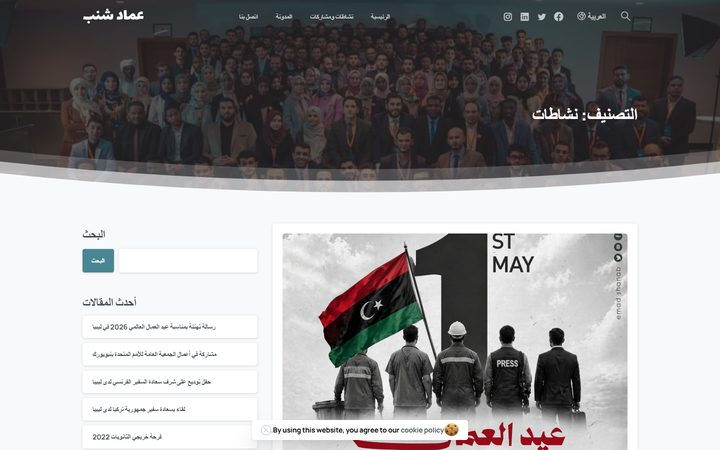
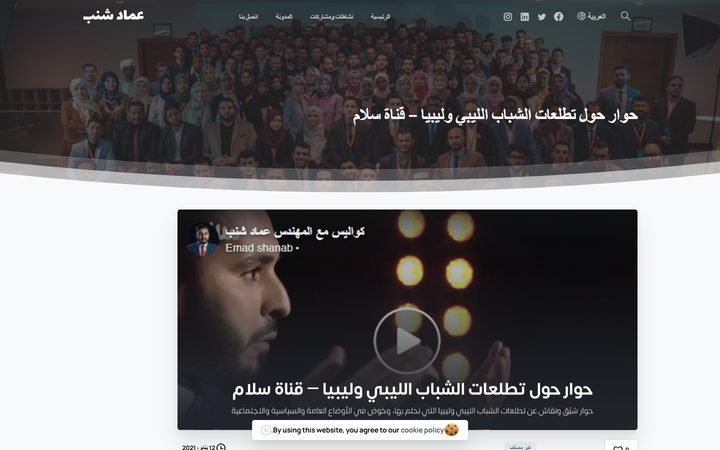
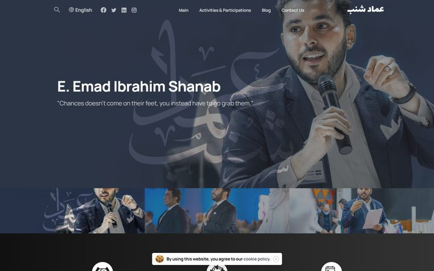
الشاشة الأولى
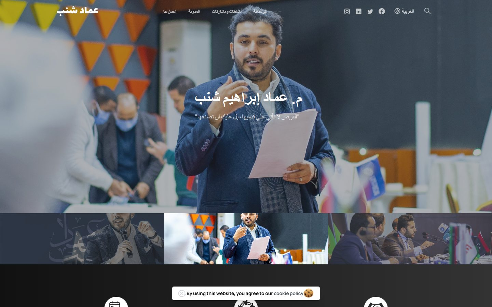
- 1
الاسم دون الصفة
اسم وحكمة فوق صورة الوجه، ولا شيء يقول من هو، ولا ماذا يفعل اليوم.
الحل المقترحسطر تعريف بالصفة الحالية تحت الاسم.
الركيزة 1 - 2
أخطاء في السطر الأول
«علي قدميها» صوابها «على»، و«ان» صوابها «أن». وأخطاء مثلها في التذييل: «محفوضة»، و«أخر المنشورات».
الحل المقترحمراجعة لغوية لكل نصوص الموقع الثابتة.
الركيزة 1 - 3
نصوص القالب بالإنجليزية
شريط ملفات التعريف بالإنجليزية ونقطته مقلوبة، ولا خيار فيه للرفض. ولا خط عربي محمّل، فيظهر النص بخط الجهاز.
الحل المقترحتعريب كل نصوص القالب، وخط عربي واحد للموقع.
الركيزة 1
صفحات لا تجمعها قصة
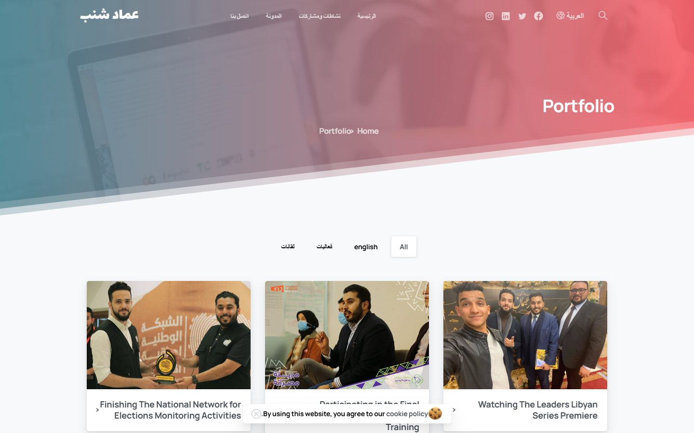
- 4
كل صفحة بشكل مختلف
الرئيسية بصورة حشد، وصفحة Portfolio بصورة حاسوب جاهزة من القالب، وصفحة الخطأ بلون أزرق. وصفحة Portfolio غير موجودة في القائمة، وتكرر المنشورات.
الحل المقترحشكل واحد لكل الصفحات، ونهاية كل صفحة تقود إلى خطوة تالية.
الركيزة 2 - 5
مصطلحات القالب ظاهرة للزائر
«التصنيف: نشاطات»، و«Previous post»، وتصفية تخلط اللغة بنوع المحتوى: «All / english / فعاليات / لقائات».
الحل المقترحعناوين بلغة الزائر، وتصفية حسب النوع والسنة.
الركيزة 2
أهم نشاط حديث: صفحة غير موجودة
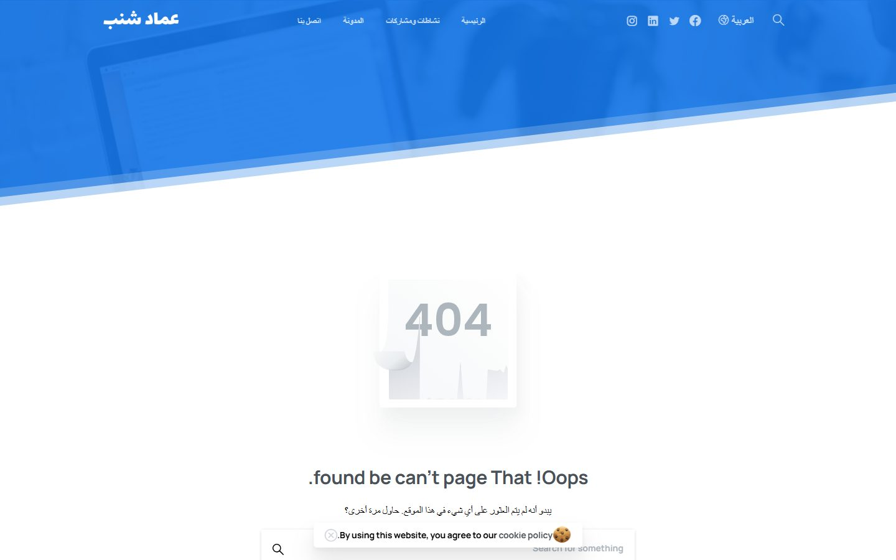
- 6
رابط معطّل لأقوى دليل
المشاركة في الجمعية العامة للأمم المتحدة (أكتوبر 2025) تفتح صفحة 404 من قائمة النشاطات. النسخة الإنجليزية وحدها تعمل.
الحل المقترحإصلاح الرابط، وفحص دوري لروابط الموقع كلها.
الركيزة 3 - 7
نشر متوقف وبطاقات بلا تواريخ
30 منشوراً منذ 2020، ولا شيء في 2023 و2024. آخرها تهنئة في مايو 2026. وبطاقات الرئيسية الأربع عشرة بلا تواريخ ولا ترتيب زمني.
الحل المقترحتاريخ على كل نشاط، والأدوار الحالية أولاً ثم خط زمني للسابقة.
الركيزة 3
الأولويات: بالترتيب
- 1
إصلاح الروابط
خبر الأمم المتحدة أولاً، ثم فحص دوري لروابط الموقع كلها.
- 2
تعريف في الشاشة الأولى
الصفة الحالية في سطر واحد تحت الاسم، ومراجعة لغوية للنصوص الثابتة.
- 3
محتوى مؤرّخ ومرتّب
تاريخ على كل نشاط وبطاقة، والأدوار الحالية أولاً ثم خط زمني للسابقة.
- 4
تنظيف بقايا القالب
تعريب نصوص القالب ومصطلحاته، وخط عربي واحد، وشكل واحد لكل الصفحات، وحذف Portfolio أو دمجها.